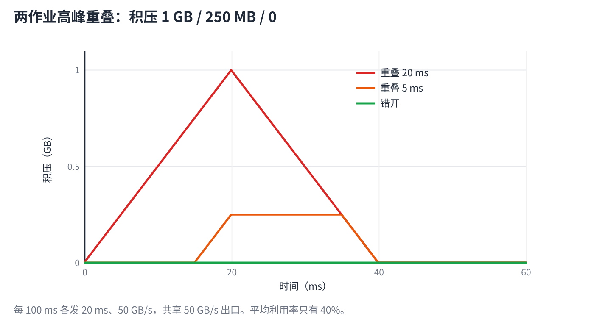
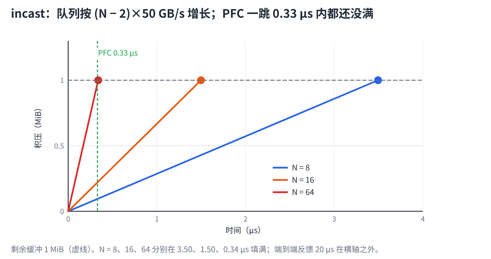
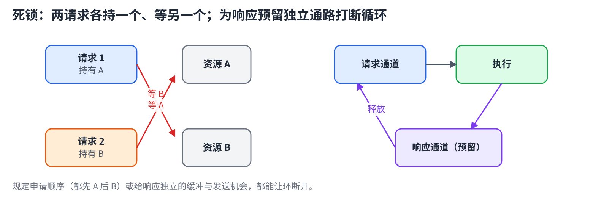
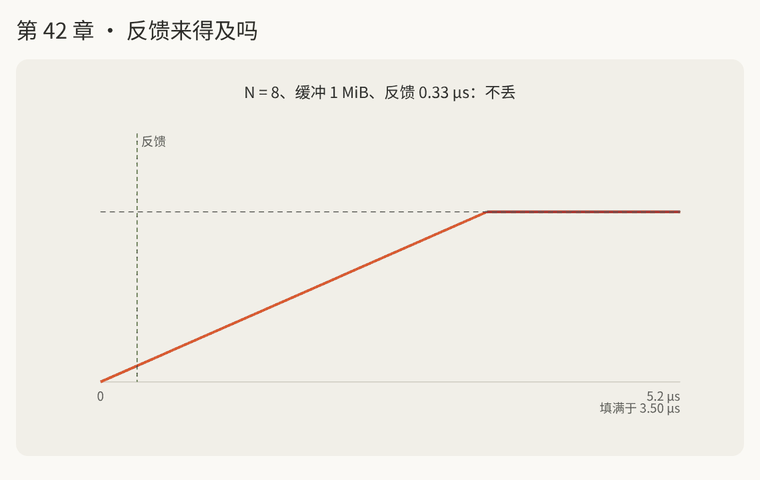

第 42 章 · 共享网络中的拥塞与可靠性：高峰、反馈、多路径、死锁
本地运行
git clone https://github.com/wikieden/ai-infra-from-constraints
cd ai-infra-from-constraints/code/notebooks
pip install jupyterlab torch numpy
jupyter lab ch42_congestion.ipynb也可以下载后直接用 VS Code 打开 .ipynb 运行。需要 GPU 的章节在 Colab 里选「代码执行程序 → 更改运行时类型 → GPU」。
本章回答：平均只用了 40% 的带宽，为什么还排出 1 GB 的队？反馈要多快才不丢包，PFC 和 DCQCN 各管多远？把一份数据拆到两条路径，什么时候反而更慢？ECMP 哈希冲突让整组只剩多少速度？什么情况下会死锁？
讲解日期：2026-11-24 · 上一章：第 41 章 数据交接、顺序与状态管理 · 下一章：第 43 章 从通信改进到任务完成
对应原文：materials/ai-infra-book/manuscripts/07-数据中心网络.md§7.5 L664–L829（例题 7.5，图 7-40 到 7-50）
本章缩写：ECN = Explicit Congestion Notification（显式 / 拥塞 / 通知）· DCQCN = Data Center Quantized Congestion Notification（数据中心 / 量化 / 拥塞通知，RDMA 的拥塞控制）· PFC = Priority-based Flow Control（基于优先级的 / 流控，IEEE 802.1Qbb）· incast = 多对一汇聚 · ECMP = Equal-Cost Multi-Path（等价 / 多路径）· MTU = Maximum Transmission Unit（最大 / 传输 / 单元）· C-AQM = UB 的协同主动队列管理。全部缩写见 缩写与术语表
讲解
第一步：平均不高，高峰重叠照样排队（2026-11-24）
类比：两个公司都在 9 点上班。 一天里路上大部分时间空着，可 9 点那一阵两家的车同时挤上同一条路，就堵了；让一家 9:20 上班，路就不堵。
例题 7.5（原文 L670–L696）：两个作业每 100 ms 各有 20 ms 高峰，速率 50 GB/s，共享一条 50 GB/s 上联：
高峰结束后还要 20 ms 才排空。重叠 5 ms 积压 250 MB；完全错开就是 0。只给 512 KiB 缓冲，允许的重叠只有约 10.5 μs。CASSINI 利用训练通信的周期错峰；配套实验里一次性推迟 50 ms，相位还会漂移。

图 42-1 · 发送同样多的数据，差别只在开始的相对时刻。
一句话：缓冲存的是一段时间内到达和出口的差额；相位决定差额积累多久。
第二步：反馈要多快：一跳的 PFC，端到端的 DCQCN（2026-11-24）
类比：高速收费站排队。 站口的人看到排满了，向上一个路口举牌（PFC，一跳）；同时打电话让源头的车慢点开（DCQCN，端到端）。举牌快但只管一个路口，打电话慢但能从源头解决。
原文 L700–L746：\(dQ/dt = \lambda(t) - B\)。剩余缓冲 \(Q_{\mathrm{free}}\)、发现拥塞到降速的时延 \(T_f\)：
100 GB/s 到达、50 GB/s 出口、剩 256 KiB：只够 5.2 μs；20 μs 才降速就丢约 738 KB。降到 50 GB/s 只让队列不涨，降到 40 GB/s 才以 10 GB/s 排空（512 KiB 约 52 μs）。
incast（多对一汇聚）：\(N\) 个发送方同时打一个出口，到达 \((N-1) \times 50\) GB/s，剩余缓冲 1 MiB：
| \(N\) | 超额速率 | 允许反馈时延 | PFC 一跳 headroom | 端到端 20 μs 内超额 |
|---|---|---|---|---|
| 8 | 300 GB/s | 3.50 μs | 99 KB | 6.0 MB |
| 16 | 700 GB/s | 1.50 μs | 231 KB | 14 MB |
| 64 | 3100 GB/s | 0.34 μs | 1.02 MB | 62 MB |
PFC 一跳：30 m 线缆往返 300 ns + 1500 B 串行化 30 ns ≈ 0.33 μs，三种都在 1 MiB 内；端到端 20 μs 没有一个放得下。分工：PFC 在 0.33 μs 内挡住相邻一跳，让缓冲撑到 DCQCN 把源头降下来。只靠端到端不丢包要 \((N - 2) \times 50 \times 20\ \mu\text{s} \le Q_{\mathrm{free}}\)：1 MiB 只到 \(N \le 3\)。

图 42-2 · 端到端 20 μs 在横轴之外。
一句话：反馈时延 ≤ 剩余缓冲 ÷ 超额速率；PFC 管一跳、快，DCQCN 管源头、慢，两者配合。
第三步：多路径：拆开传，等最慢的；哈希冲突（2026-11-24）
类比：两个快递员分送一本书的八页。 都从同一个仓库出发时，两人一起送快一倍；一个人绕远路，读者要等他的那几页才能按顺序读。
拆到两条路径（原文 L760–L780）：32 KiB 拆 8 个 4 KiB 报文（每个 82 ns）：
| 路径 | 完成 |
|---|---|
| 一条 1 μs | 1.66 μs |
| 两条都 1 μs | 1.33 μs |
| 两条，第二条 9 μs | 9.33 μs（还要缓存 12 KiB 乱序） |
| 首包丢失，20 μs 后只补发它 | 21.2 μs（选择性重传） |
双路径只省 0.33 μs 串行时间；路径时延差超过它就不划算（30 m 线缆就有 150 ns）。只有每条路径分到的串行时间远大于时延差才值得：8 MiB 喷洒到 8 条路径（时延 1–8 μs），29.0 μs vs 单路径 168.8 μs，代价是接收方最多缓存约 1.39 MB 乱序。
ECMP 哈希冲突（原文 L782–L800）：同一台叶交换机上的 \(n\) 条跨组流随机哈希到 \(m\) 条上联，整组要等最慢的流：
| \(n\) 流 → \(m\) 上联 | \(E[L_{\max}]\) | 无冲突概率 | 相对无冲突的速度 |
|---|---|---|---|
| 8 → 32 | 1.66 | 38.6% | 60.1% |
| 8 → 16（3:1 超售） | 2.06 | 12.1% | 48.5% |
| 32 → 32 | 3.53 | ≈ 0 | 28.3%（最差） |
| 128 → 16 | 13.36 | 0 | 59.9% |
图 42-3 · 流数和上联数接近时冲突代价最大。
对策：rail 对齐减少同一叶上的跨组流；或改成逐包喷洒（Ultra Ethernet 用熵值喷洒 + 选择性确认）。
一句话：多路径省的是串行发送时间，多的是时延差和乱序；按流哈希会冲突，逐包喷洒换乱序缓存。
第四步：死锁：持有一个、等另一个，绕成环（2026-11-24）
类比：两辆车在窄桥两头对开。 都占着桥的一半，都等对方先退，谁也过不去。
原文 L812–L828：请求 1 持有 A 等 B，请求 2 持有 B 等 A。归约系统里：请求占满接收缓冲 → 完成响应等发送队列 → 发送队列等远端释放请求空间。PFC 的暂停逐跳往上游传，形成环就是死锁。
- 规定申请顺序：所有人先 A 后 B，环被打断。
- 给响应预留通路：接收方 8 个数据槽满了，响应也要占数据槽就一起停；加独立的响应槽，释放消息能回去，队列就能周转。
- 虚拟通道把请求和响应分到不同队列。地址转换要发远程访问、又和原请求争同一组槽位，也会成环：为完成通知、地址转换、故障恢复预留资源。

图 42-4 · 起作用的是独立容量和使用次序。
一句话：死锁是资源依赖成环；规定申请顺序或为响应预留独立资源就能打断。
动画演示：反馈来得及吗

可交互版：animations/42-congestion.html（滑块：发送方数 N 2–64；剩余缓冲 256 KiB–8 MiB；反馈时延 0.1–30 μs）。
怎么看：
- 一条曲线是队列随时间增长（超额速率 \((N - 2) \times 50\) GB/s）（第二步）；
- 水平虚线是剩余缓冲，竖线是反馈生效时刻；
- 竖线在曲线碰到虚线之前 = 不丢，之后 = 丢包量显示在右边；
- 播放：N = 8 时 PFC 0.33 μs（来得及）→ 端到端 20 μs（丢 5 MB）→ N = 64 → 缓冲加到 4 MiB。
练习与作答记录
题 1（第一步）：两个作业每 200 ms 各有 30 ms 高峰，速率 50 GB/s，共享 50 GB/s 出口。平均利用率多少？完全重叠时最大积压和排空时间？
作答记录：（待作答）
题 2（第二步）：出口 100 GB/s，每个发送方 50 GB/s，\(N = 16\)，剩余缓冲 2 MiB。允许的反馈时延是多少？PFC 一跳 0.33 μs 内的 headroom 要多少？
作答记录：（待作答）
题 3（第三步）：16 个 4 KiB 报文（50 GB/s）均分到两条路径，时延 1 μs 和 3 μs。完成时间多少？只走第一条呢？
作答记录：（待作答）
原书实验 7-11 到 7-14（L748、L752、L802、L806）。想多练可以做。
口诀
两家都九点上班，路平时空也会堵；错开二十分钟就不堵；
站口举牌管一个路口、快，打电话管源头、慢；
两人分送八页，绕远路的拖全书；随机分道最怕车道和车一样多；
窄桥对开都等对方退，先后规矩或留一条退路。
本章复习卡片
I149（例题 7.5：40% 利用率也积压 1 GB，相位决定）、I150（\(T_f \le Q_{\mathrm{free}}/(\lambda - B)\)、incast 表、PFC 0.33 μs vs DCQCN 20 μs）、I151（多路径的时延差、选择性重传、ECMP 冲突 28.3% 与死锁的两种解法）。练习做完后，按答错、卡住的地方再补。
附录 · 延伸阅读
留给以后深入学习用，不影响本章主线。★ 是建议先读的。
推荐阅读
| 读什么 | 读哪里 | 读它为了什么 |
|---|---|---|
| ★ AII 第 7 章 | §7.5 L664–L829 | 本章原文 |
| Zhu 等，DCQCN（SIGCOMM 2015） | 算法与 headroom | 22.4 KB / 端口 / 优先级 |
| Rajasekaran 等，CASSINI（NSDI 2024） | 方法 | 训练作业错峰 |
| Ultra Ethernet 规范概览 | 传输层 | 熵值喷洒与选择性确认 |
| Hu 等，Deadlocks in Datacenter Networks（HotNets 2016） | 全文 | PFC 死锁 |
数学原理
- 流体队列：\(dQ/dt = \lambda - B\)，积压 = 超额 × 时长。
- 最大负载分布：\(n\) 球 \(m\) 盒，\(P(L_{\max} \le c)\) 用多项式计数精确求。
- 资源依赖图：有环 ⇒ 可能死锁；全序申请 ⇒ 无环。
公式清单
| 公式 | 意思 |
|---|---|
| \(Q_{\max} = (\lambda - B) h\) | 重叠 \(h\) 的积压 |
| \(T_f \le Q_{\mathrm{free}}/(\lambda - B)\) | 允许的反馈时延 |
| headroom \(= (\lambda - B) \times T_{\mathrm{hop}}\) | PFC 预留 |
| 速度比 \(= \lceil n/m \rceil / E[L_{\max}]\) | ECMP 冲突 |
代码对照：把本章的数字用代码算一遍
代码
ai-infra/solutions/chapter-code/ch42_congestion.py，测试tests/test_ch42.py：
bash cd ai-infra/solutions/chapter-code uv run python ch42_congestion.py uv run pytest tests/test_ch42.py
| 讲义 | 写法 | 跑出来 |
|---|---|---|
| 第一步 | overlap_backlog_gb(h) |
1 GB、250 MB |
| 第二步 | tolerable_delay_us、incast(N)、pfc_hop_us() |
5.2 μs；3.50 / 1.50 / 0.34 μs；0.33 μs |
| 第三步 | multipath_us(...)、ecmp(n, m) |
1.33 / 1.66 / 9.33 μs；60.1% / 28.3% |
代码里才看得到的 3 件事：
max_load_dist用Fraction和组合数精确计数（\(m^n\) 种放法），不是蒙特卡洛；128 球 16 盒也只要一两秒。- incast 的超额是 \((N - 2) \times 50\)：\(N - 1\) 个发送方减去出口能送走的一份。
- 多路径模型里每条路径的完成 = 时延 + 分到的报文数 × 82 ns，取最大。
自己改一改（不影响练习答案）：
- 用
ecmp画 \(n\) 从 1 到 64、\(m = 32\) 的速度曲线，找最低点。 - 给
multipath_us加不均匀分配，找时延 1 μs 和 9 μs 两条路径的最优分法。 - 模拟一个周期性 incast：每 100 μs 来一次 \(N = 16\)，看 PFC 暂停占了多少时间。